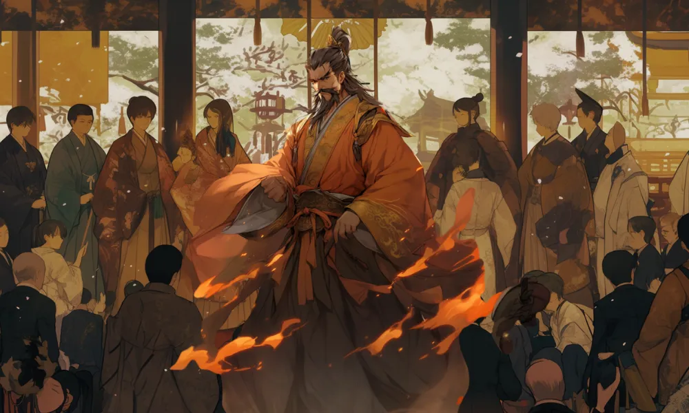
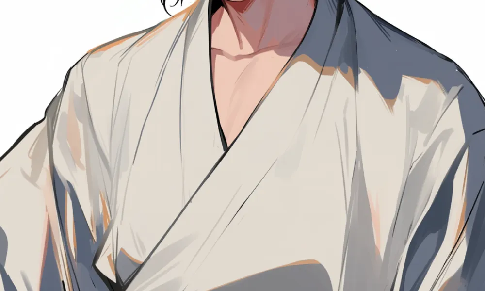
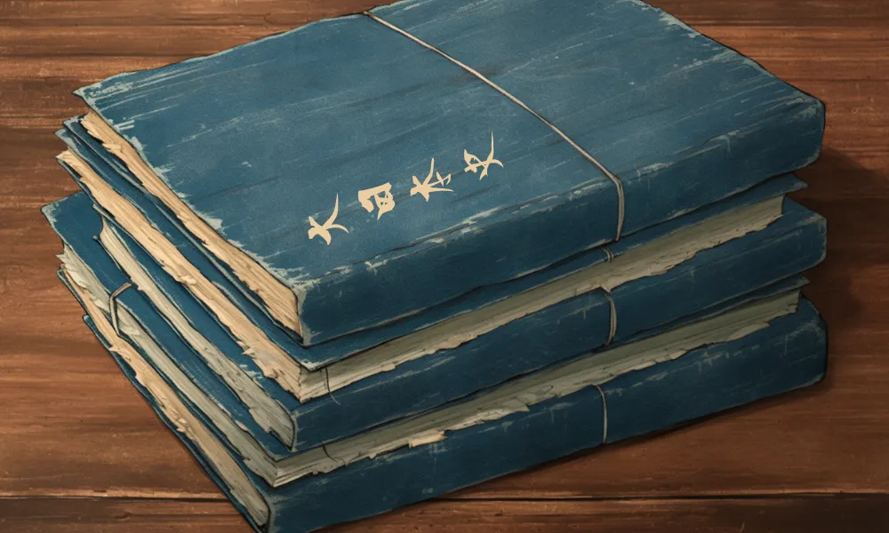
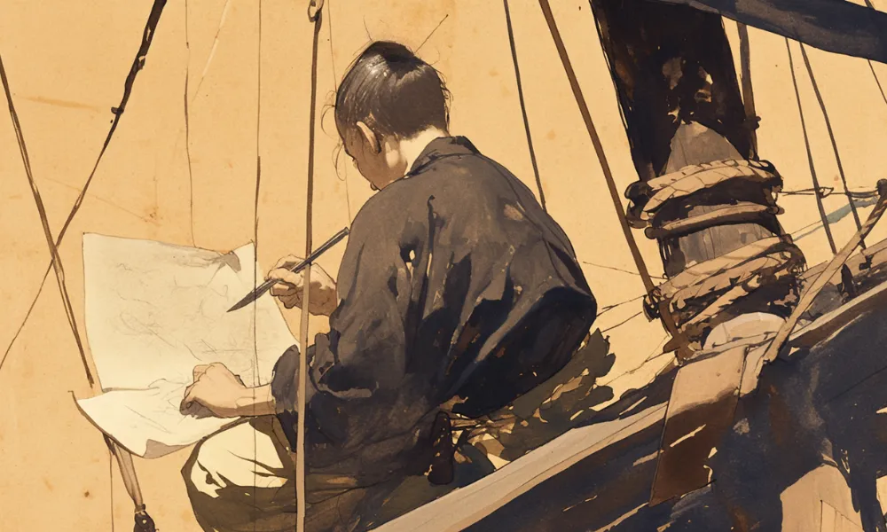
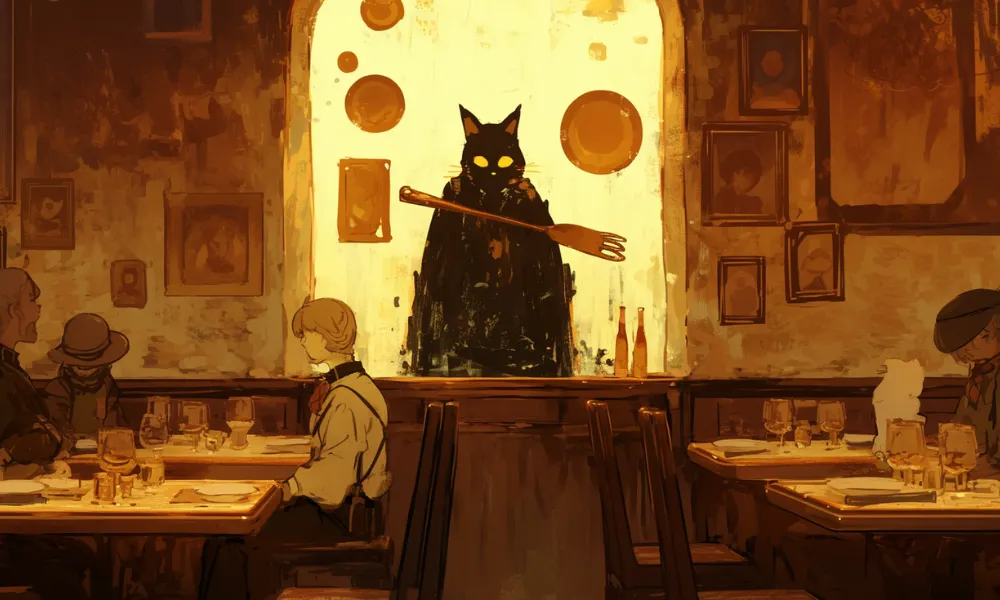

卑弥呼
国を鎮めた巫女
 稲作伝来
稲作伝来
お米ってウマいよなぁ～。弥生時代のお米って、今とは違う味だったのかな？
 占いで統治！？
占いで統治！？
弥生時代は占いで政治を決めていたんですって。科学や学問よりもスピリチュアルが信じられていたのね


[人物プロフィール]


 卑弥呼ってどんなひと？
卑弥呼ってどんなひと？
日本の歴史の本でも1番最初に名前が出てくるからオレでも知ってるぜ。たしか、中国の魏志倭人伝という本に、載っているんだよな。邪馬台国の場所も卑弥呼の姿も謎だらけって聞いたぞ。
コラム
（カード右上）今汝を以て親魏倭王と為し、金印紫綬を仮し、装封して帯方の太守に付し仮授せしむ。
 カードの効果解説！
カードの効果解説！
 三角縁神獣鏡
三角縁神獣鏡
三角縁神獣鏡という名は、実は古墳時代に作られた縁が三角のもの全部を言うんだが、卑弥呼のものはまだ見つかっていない。青銅製のこいつは昔は金に輝いていたようだ。

 邪馬台国
邪馬台国
魏志倭人伝に書かれている邪馬台国だけど、どこにあったか分かってないのよね……。近畿か九州にあったと言われるけど、証拠がないんだって。ロマンを感じるわっ。

小野妹子
日出ずる処の遣い
手紙を持って隋へ！
妹子さんは手紙を中国まで運んだのよ。当時の航海は命がけだったんだって。
日出づる処？
この手紙と言えば日出づる処の……なんとか、だったよな。どんな反応されたんだろうな？

[人物プロフィール]


小野妹子ってどんなひと？
聖徳太子(次ページ参照)の家来として有名だね。法律を整えた日本が中国と対等に外交できるように尽力したんだ。でも中国の皇帝が中々受け入れてくれなくて大変だったらしいよ
コラム
（カード右上）日出ずる処の天子、書を日没する処の天子に致す。恙無きや、云々。
カードの効果解説！
最初の遣隋使
妹子は太子から預かった手紙を607年に、当時の中国の隋に初めて持っていったんだ。｢日出づる処の天子、書を日没する処の天子に致す」の書き出しで知られているよ。
怒る煬帝の返書
でも隋の皇帝煬帝は天子を名乗っていいのは中国の皇帝だけだとして、とても怒ってしまったみたい。妹子はその返書を太子に見せたくなくて失くしたことにしたと聞くわ。


聖徳太子
厩戸王
何度もお札になった姿
聖徳太子は日本で1番お札に選ばれた人だ。白色の服に見覚えがある人も多いだろう。
冠位十二階の色
冠位十二階は上から紫、青、赤、黄、白、黒だったんだ。それぞれ2つずつに分かれてたんだよ。

[人物プロフィール]

聖徳太子ってどんなひと？
推古天皇の摂政になって、飛鳥時代の表舞台に立ったのよ。仏教や中国の法律を積極的に導入して日本の政治の基礎を作ったわ。十七条の憲法や法隆寺も有名ね。
コラム
（カード右上）我必ず聖に非ず。彼必ず愚かに非ず。 共に是れ凡夫ならくのみ。
カードの効果解説！
遣隋使派遣
太子は中国の文化や政治を日本の手本にしようと、遣隋使を中国に送ったわ。隋が滅ぶ直前の614年までに何回か送られたそうよ。小野妹子もそのうちの一人ね。
冠位十二階
それまで家柄を見るばかりで曖昧だった役人たちを、太子は初めて位階づけをしたんだ。これでようやく能力に応じて役人を確保できるようになったんだよ。


鑑真
決死の渡日
荒波を越えて
日本に向かおうとした鑑真は何度も荒波や妨害にあって、6回目で初めて日本に辿り着いたんだ。
失明しても祈る
鑑真は途中で目が見えなくなっても、仏に祈り続けたんだって。凄い執念だな……。

[人物プロフィール]

鑑真ってどんなひと？
鑑真は元々、中国の僧で、たくさんの人に仏教を伝えていたんだ。そこに日本にも教えて欲しいと言われたんだけど、荒れる波を越えて行こうとする人はいなくて、ついに自分で行くことを決めたんだ。
コラム
（カード右上）これ法の為の事なり。何ぞ身命を惜しまんや。 諸人行かざれば、我即ち去くのみ。
カードの効果解説！
唐招提寺
唐招提寺は奈良県にある寺だ。鑑真はそれまで僧を育てる制度が不足していた日本で自ら戒律を授け、僧が集う場所として唐招提寺を建てたという。世界遺産の一つだ。

唐大和上東征伝
鑑真が6度渡海を試みて5度も失敗し、6回目で辿り着いたことや、唐招提寺がなぜ建てられたのか、を記したのが唐大和上東征伝よ。当時の中国の様子を知ることもできるわ。

空海
真言宗の祖
筆の達人
空海は三筆といって、字を書く達人だったんだよ。ことわざにもなってるね。
山奥の寺
空海が建てた金剛峯寺は山の中にある。他の誘惑がなく、修行にうってつけだったそうだ。

[人物プロフィール]


空海ってどんなひと？
空海は最澄と並んで平安時代の仏教を形作った人だよ。仏の教えは修行することで手に入れるものという密教の考え方から、真言宗の祖となったんだ。故郷の四国で巡ったお遍路も有名だね。
コラム
（カード右上）弘法筆を選ばず。
カードの効果解説！
 高野山金剛峯寺
高野山金剛峯寺
金剛峯寺は密教の修行場として高野山という山の中に建てられたお寺よ。昔は私みたいな女性は入ることができなかったわ。今では世界遺産に登録されて多くの人が訪れているのよ。

綜芸種智院
実は空海はただのお坊さんじゃなかったらしいぜ。なんでもこの綜芸種智院ってところで、僧や貴族だけじゃなくて普通の人でも教育を受けられるようにしたらしいんだ。空海って本当にお師匠さまだったんだな。

小野小町
謎多き世界三大美女
謎の美女
六歌仙にも数えられた小町だけど、その素顔はよく分かってないのよ。ミステリアス美女ってことね。
秋田の風景
小町は秋田に暮らしていたと言われるぞ。おいしいあきたこまちは小町が由来なんだぜ。

[人物プロフィール]


小野小町ってどんなひと？
小町は平安時代の前期では珍しい女性の歌人よ。はっきりと記録に残っているものは少ないけど、百人一首にもしっかり名を残しているのよ。絶世の美女だったとされるわ。
コラム
（カード右上）花の色は 移りにけりな いたづらに わが身世にふる ながめせしまに
カードの効果解説！
小町集
小町集は小町の歌を集めたもので、小町の作風は女性ならではの恋愛観や、美しいものが老いていく儚さが詠まれているが、どれが本物か分からないという。秘密の多さも魅力だろう。

百夜通い
平安時代は男の人が女の人の家に通って結婚するのが普通だったのだけれど、小町に恋した深草少将という人はなんと99日も通ったのよ。でもあと1日で結婚できるという所で死んでしまったんだって……。


清少納言
貴族生活の伝承者
平安のメモ帳
清少納言は枕草子のネタを集めるために、メモ帳を持ち歩いていたんだ。
冬の朝
これは、冬はつとめてってやつだな！宮中にいた貴族たちの朝の様子を書いていたんだ。

[人物プロフィール]

清少納言ってどんなひと？
清少納言は枕草子を書いたことで知られているわ。エッセイだけじゃなくて、和歌も嗜んでいたようね。実は清少納言というのは本名ではなくて、彼女の本当の名前は分かっていないのよ。
コラム
（カード右上）夜をこめて 鳥の空音は はかるとも よに逢坂の 関は許さじ
カードの効果解説！
枕草子執筆
枕草子って、たしか春はあけぼの……っていう書き出しだったよな。内容は清少納言が思ったことをありのままに書いたもので、結構毒舌だったんだぜ。でも、仕えていた相手の定子のことは、ほめちぎっていたな。

紫式部のライバル
紫式部とは仕えていた妃が違うから顔を合わせたことは無いと言われているけど、でも2人は噂話でお互いのことを知っていたみたいなんだ。もしかしたら清少納言も紫式部のことを意識していたかもね。

紫式部
内気な天才作家
月下の執筆風景
源氏物語は夜中にこっそり書いていたんだって。月の光は読み書きに大切だったんだ。
黙々と書き続ける姿
源氏物語は54巻もあるんだぜ。ずっと書いていたのかな？

[人物プロフィール]

紫式部ってどんなひと？
紫式部は天皇の妃だった彰子に仕えて文学を教えながら、源氏物語を書いていたのよ。実は紫式部という名前も本名ではなくて、紫というのは源氏物語のメインヒロインから名付けられたんだって。
コラム
（カード右上）めぐりあひて 見しやそれとも わかぬ間に 雲がくれにし 夜半の月かな
カードの効果解説！
源氏物語執筆
源氏物語は光源氏を主人公にして、宮中にいる様々な女性と恋して愛し合うお話よ。光源氏の生い立ちや女性たちの作り込みは、1000年も前のものとは思えないほどよ。世界中で読まれているのもうなずけるわね。
清少納言のライバル
清少納言の少し後に宮中にやって来た紫式部は清少納言を意識する機会がたくさんあったみたいなんだ。自分の日記の中でも、清少納言のことに触れていて、酷評とも賞賛とも取れる文を残しているんだ。


源義経
悲劇の奇策家
悲壮な未来
なんだか、悲しい表情ね。これから何か起こるのかしら……？
八艘飛び
壇ノ浦の戦いで、義経は船を八艘も乗り移って戦ったんだぜ！

[人物プロフィール]
源義経ってどんなひと？
義経はあの源頼朝の弟で、小さい頃は鞍馬山に1人で預けられたんだ。お兄ちゃんの頼朝と一緒に平家を倒しにいったんだけど、戦いは天才的でも、政治に詳しくなかったから仲違いしてしまって滅ぼされちゃうんだ。
コラム
（カード右上）いくさはただ平攻に攻めて、勝つたるぞ心地はよき。
カードの効果解説！
壇ノ浦の戦い
義経は頼朝の挙兵に従って、戦い続けて平家を西へ西へ追い詰めていったんだ。壇ノ浦の戦いは最後の戦いで、潮の流れを読み切った義経は自分で刀を振るって平家を滅ぼしたんだぜ！

 九郎判官
九郎判官
壇ノ浦の後、頼朝に敵視されて幼い頃面倒を見てくれた奥州藤原氏に滅ぼされちゃうんだ。多くの奇策で翻弄した名将だったから、たくさんの人の同情をひいて、歌舞伎や演劇が作られるようになったんだ。
新田義貞
鎌倉落しの功労者
渡河
分倍河原の戦いも小手指ヶ原の戦いも川を渡って戦ったんだよ
騎馬武者
鎌倉時代の武将は、馬に乗って戦っていたんだ！

[人物プロフィール]


新田義貞ってどんなひと？
新田義貞は元々鎌倉幕府の御家人だったんだけど、後醍醐天皇の倒幕運動に参加して、鎌倉幕府を攻撃したんだよ。この時に山側ではなく、守りが手薄だった海沿いを進撃したんだ。その後も後醍醐天皇に付き従い続けたんだよ。
コラム
（カード右上）今はこれまで。
カードの効果解説！
小手指ヶ原の戦い
後醍醐天皇に従って倒幕の兵を起こした義貞だけど、最初はとても少なかったんだぜ。でも鎌倉幕府に不満を持つ武将が次々に集まって、入間川にある小手指ヶ原で幕府軍と激突したんだ！

 分倍河原の戦い
分倍河原の戦い
小手指ヶ原で勝った義貞の軍は、そのまま鎌倉に進撃したんだけど、再び迎え撃ちに来た幕府軍と今度は多摩川にある分倍河原で衝突したんだ。この戦いで義貞軍は決定的な打撃を与えたんだよ。

尚巴志王
勢治高真物
首里城
オレ、首里城の2000円札持ってるぜ！……でも2019年に焼失しちゃったんだよな……。
長い髭
長い髭が特徴的ね。何か意味があったのかしら？

[人物プロフィール]


尚巴志王ってどんなひと？
尚巴志王は琉球王国、現在の沖縄県の国王だった人よ。実は尚巴志という漢字は当て字で実際はどんな読み方だったのか分かってないわ。尚という名字も中国からもらったものだったのよ。
コラム
（カード右上）巴志の人となりは、豪胆にして志が高く、世を覆い尽くすほど雄才である。
カードの効果解説！
琉球統一
尚巴志王は最初、琉球王国のうち北側3分の1ぐらいしか治めていなかったんだけど貿易をして力を蓄え、やがて琉球全体を征服したんだ。国民からの人気も高かったみたいだね。

首里城
首里城はグスクといって、戦国時代の城とは全然違くて、むしろ中国の城に近いんだぜ。尚巴志王は琉球を統一した後に大きく改修したんだ。今では跡地が世界遺産になってるぞ！

北条早雲
下剋上の嚆矢
三崎城制圧！
早雲はこの三崎城を手に入れて相模を統一したんだぜ！
老年で統一
相模を統一した時には80歳を越えていたかもしれないんだって！

[人物プロフィール]

北条早雲ってどんなひと？
北条早雲は戦国時代の火付け役の1人と言われているぞ。出自についてはまだ調査中だが、自分1人で伊豆国と相模国を奪い取り、下克上を果たしたと言われている。年齢も不明だが一説には老境にあったという。
コラム
（カード右上）少しの隙あらば、物の本をば、文字のあるものを懐に入れ、常に人目を忍び見るべし。
カードの効果解説！
小田原火牛の計
火牛の計というのは牛の角に松明を付けて、まるで兵士のように見えるようにして敵に突撃させる策略だよ。早雲は兵士をほとんど使わずに小田原城を奪う時にこの策略を使ったと言われているよ。

相模統一
早雲は小田原城を奪った後も戦い続けて、三崎城という三浦半島の城を攻め落として相模の全部を手にしちゃうんだ。こうして戦国大名になった早雲だけど、領民からめちゃくちゃ慕われてたんだって。

ザビエル
努力の実らぬ宣教師
苦難の表情
日本での布教は、あんまり上手くいってなかったみたいね……。
トンスラ
これは聖なる髪型なんだって。てっぺんハゲじゃないぞ！

[人物プロフィール]
ザビエルってどんなひと？
フランシスコ・ザビエルはスペインのイエズス会に所属していた宣教師だよ。ザビエルは世界中にキリスト教を広めるため日本だけでなく、中国や東南アジアにも訪れたんだよ。
コラム
（カード右上）曲がったものをまっすぐにすることは困難です。
カードの効果解説！
イエズス会創設
ザビエルは大学の友人たちと共に世界にキリスト教を広めるという誓いを立ててイエズス会を創設したんだ。後にポルトガル国王の支援もあって、インドから日本に至るまでの広い範囲に布教するんだ。

イエズス会士日本通信
ヨーロッパ人として初めて日本にやってきたザビエルはヨーロッパの国々とは見た目も文化も全く違う日本人のことを事細かにメモして、イエズス会や本国に送ったのよ。この本を見て興味を持った人も多いわ。

上杉謙信
義に生きた軍神
謙信女性説？
謙信は生涯妻を持たなかったから女の人だったかもしれないんだって！
黒衣の軍神
唐沢山城の戦いでは鎧も着けずに敵に突っ込んでったと言われてるんだせ！

[人物プロフィール]


上杉謙信ってどんなひと？
上杉謙信は元々長尾氏という越後の戦国大名だったんだ。屈強な越後の人々を率いて、関東や北陸、長野で激戦を繰り広げたんだぜ！その戦いぶりはまさに軍神と言われているんだ！
コラム
（カード右上）人の上に立つ対象となるべき人間の一言は、深き思慮をもってなすべきだ。
カードの効果解説！
春日山城
春日山城は謙信が本拠とした城で、新潟県の南側にあるぞ。この城は山全体を覆うように家臣の屋敷や砦が建てられていたと言われているんだぜ！だから謙信の息子たちが激しい争奪戦をしたんだってさ。

上杉笹
謙信は元々長尾氏なこともあって最初は別の家紋を使っていたんだが、関東管領を譲られて上杉氏となったために、笹紋を使うようになったとされる。謙信のものは特に上杉笹と呼ばれているな。

織田信長
尾張の大うつけ
火縄銃
信長は海運で得たお金を使ってたくさんの鉄砲を揃えたんだよ。
雷雨の奇襲
桶狭間の戦いは雷雨の中で奇襲をしかけたんだぜ！

[人物プロフィール]


織田信長ってどんなひと？
信長は、変な格好をして変な行動ばかりしていたから、うつけと呼ばれていたんだけど、周りにとらわれない合理さで多くの勢力を平らげていった武将なんだ！戦国時代を終わらせるキッカケになったんだぞ！
コラム
（カード右上）理想を持ち、信念に生きよ。
カードの効果解説！
三段撃ち
)信長は長篠の戦いで、火縄銃を交代で放つことで連射できるようにした三段撃ちを用いたと言われているな。本当かどうかは分からないが、少なくとも織田家の財力で大がかりな鉄砲隊を組織していたようだ。
桶狭間の戦い
桶狭間の戦いは当時1ヶ国しか持っていなかった信長が、3ヶ国を持っていた今川義元に奇襲して勝利した戦いだぜ。信長は勝つために事前の情報収集をしたり谷底に義元をおびき寄せたりしていたみたいだぞ。


豊臣秀吉
太閤の夢
農民から天下人へ！
秀吉は無名の庶民から天下人に大出世したんだ。
刀狩
農民から刀や鉄砲を取り上げたのよ。

[人物プロフィール]


豊臣秀吉ってどんなひと？
豊臣秀吉は、生まれも血筋もよく分かっていない人だったんだけど、織田信長に仕えたことで花開いた武将なんだ。信長が本能寺の変で亡くなった後は、秀吉が引き継いで日本全国を統一したんだよ。
コラム
（カード右上）露と落ち 露と消えにし 我が身かな 浪速のことは 夢のまた夢
カードの効果解説！
刀狩
刀狩は、全国を統一した秀吉が、それまで武装した農民が各地で一揆を起こしていたのを止めさせるために刀や鉄砲を没収した政策よ。これのおかげで武士と農民が区別されるようになるの。

文禄・慶長の役
天下統一した秀吉は、日本に留まることなく、隣国の朝鮮半島に攻め込んだんだよ。だけど、慣れていない大陸での戦いに日本軍は苦戦。領土を得られなかったから多くの武将が不満に思ったんだ。


徳川家康
江戸幕府初代将軍
73年の生涯
家康は少年期から死ぬ直前まで波乱万丈な人生を送ったんだよ。
太陽
日光東照宮や2023年の大河ドラマのモチーフだな。

[人物プロフィール]

徳川家康ってどんなひと？
家康は愛知県の東、三河国で生まれたのよ。その頃は松平といって織田や今川に挟まれて大変だったそうよ。武田信玄に滅ぼされそうになったこともあったけど、最後は江戸幕府を開いたわ。
コラム
（カード右上）我もし濱松を去らば、刀を踏み折りて武士を止むべし。
カードの効果解説！
関ヶ原の勝者
家康は豊臣秀吉が死んだ後、福島正則という人と石田三成という人が仲が悪いことに目をつけて、関ヶ原の戦いを仕掛けるんだ。小早川秀秋の裏切りもあって、家康は勝利、江戸幕府を開いたよ。
今川と織田の人質
家康は小さい頃、松平の家を守るために人質にされていたんだ。途中で織田に盗まれて、信長と出会ったり、今川が奪い返した後には太原雪斎という人に色々なことを教わったりしたらしいぞ。
伊達政宗
飛竜乗雲
独眼竜
政宗は右目を失っていたから独眼竜と呼ばれたんだぜ
東北の雪
政宗は雪がたくさん降る東北地方の武将なんだよ。

[人物プロフィール]


伊達政宗ってどんなひと？
伊達政宗は伊達の当主になってからわずか5年で奥州を制覇しちゃったんだ。その後も関東や天下を狙ったんだけど、時代の流れには逆らえなくて、仙台藩の初代藩主に落ち着いたんだ。
コラム
（カード右上）物事、小事より大事は発するものなり。油断するべからず。
カードの効果解説！
人取橋の戦い
人取橋の戦いでは奥州制覇を進める政宗と、蘆名と佐竹の連合軍が戦ったんだ。この戦いで政宗は負傷、政宗を育ててくれた鬼庭左月斎は戦死するんだけど、蘆名側も決定的な打撃は与えられなかったんだ。

白装束
摺上原の戦いで勝って奥州を制覇した政宗だけど、それは秀吉の出した惣無事令に違反することだったのよ。それに政宗は小田原の戦いに遅れそうになったから、白装束を着て謝ったと言われているわ。


徳川光圀
水戸黄門
水戸黄門の服
この格好……時代劇の水戸黄門で見たことあるわ！
蝦夷への探検
光圀は海の向こうの蝦夷を探検しようとしていたみたいだよ

[人物プロフィール]

徳川光圀ってどんなひと？
徳川光圀は徳川家康の孫で水戸藩の藩主だった人だよ。領内で学問を盛んにしたことから後の水戸学の発展の礎になったよ。だからか江戸時代から水戸黄門が諸国を回る話は大人気なんだ。
コラム
（カード右上）苦は楽の種、楽は苦の種と知るべし。
カードの効果解説！
快風丸
光圀はシャクシャインの戦いがあった蝦夷地に探検に行こうとして、快風丸を造ったんだ。快風丸はとても大きな船だったんだけど、3回のうち1回しか蝦夷地に行けなかったんだって。
大日本史編纂
光圀は日本だけでなく中国からも学者を呼び寄せて様々な学問を発展させたわ。大日本史はそれまでの日本の歴史をまとめようという壮大な試みで、光圀が生きているうちには作り終わらなかったのよ。


松尾芭蕉
俳聖
芭蕉の肖像画
この格好、見たことあるぜ！松尾芭蕉の帽子だよな！
蛙池
「古池や 蛙飛び込む 水の音」っていい句よねぇ……。

[人物プロフィール]
松尾芭蕉ってどんなひと？
松尾芭蕉は江戸時代の俳人よ。それまで俳句は和歌のおまけでしかなかったのを、旅の紀行や自然の風情を取り入れることで、一大ジャンルにしたわ。芭蕉というのはバナナみたいな草のことよ。
コラム
（カード右上）古池や 蛙飛び込む 水の音
カードの効果解説！
おくのほそ道
おくのほそ道っていうのは、松尾芭蕉が当時の東北地方全体を旅行して、その各地の景色や感じたことを俳句にした本だぜ。有名な俳句がたくさんあるけど、松島のことだけは俳句になっていないんだ。
野ざらし紀行
野ざらし紀行は芭蕉が最初に旅をした時の紀行本よ。江戸の家から伊賀の故郷を往復した時に詠んだ俳句がたくさん入っているわ。芭蕉のそれまでの俳句とは一風変わっているのよ。

徳川吉宗
米公方
暴れん坊将軍
この着物にそのお顔、もしかして上様！？
目安箱
吉宗は江戸城の前に目安箱を置いて意見を集めたんだ

[人物プロフィール]


徳川吉宗ってどんなひと？
徳川吉宗は江戸幕府第8代将軍よ。元々は和歌山県の紀州藩の藩主で、江戸に召喚されたのよ。紀州藩での経験を活かして財政が傾いていた江戸幕府で享保の改革をして立て直したのよ。
コラム
（カード右上）全徳の人は得難し、一失あれば一徳あり。
カードの効果解説！
目安箱
徳川吉宗は江戸幕府第8代将軍よ。元々は和歌山県の紀州藩の藩主で、江戸に召喚されたのよ。紀州藩での経験を活かして財政が傾いていた江戸幕府で享保の改革をして立て直したのよ。
上米の制
吉宗はそれまでの江戸幕府の支出が多くて財政が苦しくなっていたのを、諸国の大名から米を集めて代わりに参勤交代の期間を減らすことで収入を増やそうとしたんだ。これが上米の制だよ。

伊能忠敬
第二の人生での偉業
地図の作成
忠敬は日本で初めて超正確な日本地図を作ったんだぜ！
海岸線と星空
地図を作る時は海岸線に沿って歩いて、星を確認していたんだ。

[人物プロフィール]


伊能忠敬ってどんなひと？
伊能忠敬は元々下総国の商人で、利根川の水運を使って力を持っていたんだ。50才になった時、忠敬は江戸に出て高橋至時に測量術を学び、江戸幕府の命令で日本全国の正確な地図を作る旅に出たんだ。
コラム
（カード右上）人間は夢を持ち、前へ歩き続ける限り、余生はいらない。
カードの効果解説！
推歩
推歩というのは忠敬が取った測量の方法で、日本の海岸線沿いを歩きながら、歩幅を元に距離を測定していたんだ。それと、昼の太陽や夜の星空を元に緯度や経度を求めて誤差を修正していたんだよ。

大日本沿海輿地全図
この地図、今でも通用するぐらい超正確なんだけど、日本の海岸線は3万km以上もあるから、さすがに忠敬が死ぬまでには完成しなかったんだぜ。それでも弟子たちが続けて完成させたんだ！


蔦屋重三郎
江戸のメディア王
江戸の印刷屋さん
重三郎は歌川広重や喜多川歌麿の絵を印刷して売っていたんだ。
メディア王
たくさんのヒット作を出した重三郎は2025年の大河ドラマの主役よ。

[人物プロフィール]
蔦屋重三郎ってどんなひと？
重三郎は元々遊郭で生まれた人なんだけど、本屋さんを開いて独立。歌川広重や喜多川歌麿の絵や恋川春町の小説を出版。江戸一の出版業者になったよ。東洲斎写楽や十返舎一九たちを育てたんだ。
コラム
（カード右上）命の幕引きを告げる拍子木がまだ鳴らないな。
カードの効果解説！
黄表紙
黄表紙というのは、それまで子供が読むものだった絵本を大人向けの挿絵付きの本に仕立てたものよ。当時の江戸で起きたことや政治を絵を中心に面白おかしく扱った本で、大人気だったわ。

狂歌本
狂歌本というのは、江戸時代以前から嗜まれてきた狂歌を浮世絵師たちによる絵を加えて本に仕立てたものだ。政治批判や社会風刺的な内容が江戸の庶民たちの好みに合っていたようだ。


喜多川歌麿
美人画への情熱
美人画への情熱
歌麿は江戸幕府に禁止されても美人画を描き続けたという。
ビードロを吹く女
ビードロっていうのは、子供のおもちゃだったらしいな！

[人物プロフィール]

喜多川歌麿ってどんなひと？
喜多川歌麿は江戸時代の浮世絵師だ。特に美人画を得意として、ひたすら美人画を描き続けたという。江戸幕府に何度も禁止令を出され、一度逮捕されても、筆を折ることは無かったそうだ。
コラム
（カード右上）人真似は嫌いで、今まで人の絵を写して描いたことはない。
カードの効果解説！
ビードロを吹く女
ビードロを吹く女は、当時の江戸にいた女の人を描いた絵なんだ。背景が少しキラキラしていて、とても人気な絵だったんだぜ。ビードロっていうのは風鈴みたいなおもちゃなんだけど、落とすと割れちゃうんだ。

寛政三美人
寛政三美人は、当時有名だった遊女3人を描いた絵だよ。よく見ると3人の顔つきはそれぞれ違うんだ。この3人は他の浮世絵師も描いていて、歌麿が描いたこの構図は当時のブームになったんだよ。

歌川広重
ジャポニズムの火種
ヒロシゲブルー
鮮やかな海の色……これがヒロシゲブルーってやつだな！
東海道五十三次の橋々
東海道五十三次は橋を描いた絵が多いんだよ。

[人物プロフィール]

歌川広重ってどんなひと？
歌川広重は、歌川豊広の弟子としてデビューした画家だ。浮世絵師の中でも風景をたくさん描いていて、東海道五十三次はとても有名だ。広重が描いた絵は西洋でも高い評価を得ている。
コラム
（カード右上）東路に 筆をのこして 旅の空 西の御国の 名所を見む
カードの効果解説！
東海道五十三次
東海道五十三次というのは、江戸幕府が整備した五街道の一つ、東海道を題材にした風景画のことだよ。五十三次というのは東海道の宿場町のことで、それぞれ一つずつ絵を描いたんだ。
ヒロシゲブルー
ヒロシゲブルーっていうのは、広重が得意としていた青色のことだ。古くから日本にある藍色よりも明るいこの色はヨーロッパから来た新しい絵の具を使っているんだって。当時のヨーロッパで注目されたんだぜ！

ペリー
黒船の衝撃
黒船
それまでの日本人は蒸気で動く船を見たことがなかったんだ。
恐ろしい表情
江戸の人もペリーって日本人とは全然顔つきが違うって思ってたのかな？

[人物プロフィール]

ペリーってどんなひと？
ペリーはアメリカ海軍の提督で、黒船だけじゃない蒸気船を使った強い海軍を作ろうとしていたんだ。日本に開国を迫っただけじゃなくて、メキシコとの戦争でも活躍したんだぜ。
コラム
（カード右上）泰平の ねむりをさます 上喜撰 たった四はいで 夜も眠られず
カードの効果解説！
黒船
ペリーは蒸気船サスケハナ号に乗って浦賀にやってきたんだ。他にミシシッピという蒸気船がいたぞ。黒色は木が水で腐食しないようにするために塗られていたんだ。日本人は蒸気船を見てとても驚いたってさ。

日米和親条約
日米和親条約は1853年に江戸幕府とアメリカで結んだ条約だ。それまで鎖国していた江戸幕府にとって初めてのことで、多くの幕臣が反発したと言われているよ。アメリカは捕鯨船の補給基地が欲しかったんだって。

吉田松陰
激動を作った秀才
厳しい先生
松陰は自他共に厳しい先生だったんだって……。怖いなぁ。
松下村塾
松陰は自分で塾を開いて、多くの生徒に教えていたんだよ。

[人物プロフィール]
吉田松陰ってどんなひと？
吉田松陰は、幕末を生きた志士の一人で、彼自身が明治維新に関わったわけでは無いけど、塾で教えたり、本を出したりすることで多くの志士たちの思想を育んだんだよ。塾生と話すのが大好きだったんだ。
コラム
（カード右上）至誠にして動かざるものは、未だこれあらざるなり。
カードの効果解説！
松下村塾
松下村塾は吉田松陰の師匠、玉木文之進という人が建てた塾だよ。松陰はここで学び、そして2年間だけだけど先生をしていたんだ。松陰の教え子には伊藤博文や高杉晋作がいて、明治維新に繋がっていくんだ。

講孟余話
吉田松陰が書いた本の中で一番力を入れていたのが、この講孟夜話よ。投獄されていた時に松陰は孟子を読み込んでいて、自分の考え方を盛り込んで注釈書に仕立てたわ。多くの志士が読んだとされているの。

坂本龍馬
日本の夜明け
龍馬の肖像画
龍馬の肖像画って、未来を見つめてるみたいでカッコいいよなぁ～！
海援隊の甲板
龍馬は海援隊を組織して貿易をしていたんだって。

[人物プロフィール]

坂本龍馬ってどんなひと？
坂本龍馬は幕末志士の代表的な人で、土佐藩を追い出された後、同じ浪士になった人を集めて海援隊を作って、倒幕派だった薩摩藩と長州藩を結びつけて、明治維新の礎にしたんだぜ！
コラム
（カード右上）何の志も無きところに、ぐずぐずして日を送るは、実に大馬鹿者なり。
カードの効果解説！
海援隊
海援隊は、元々亀山社中と呼ばれていた組織を、発展させたものなんだ。浪士だけじゃなくて農民や商人も入ることができたんだぜ。貿易や運搬をしていて、ちょっとした海軍みたいだったんだ。
船中八策
船中八策はすぐ後に出される五箇条の御誓文とよく似たもので、新しい政府がどんなことをすればいいかを示したものだったんだ。議会や憲法を作ったり外国と平等な関係を築いたりすることを説いていたんだって。

ジョン万次郎
奇跡の漂流者
アメリカ人に助けられる
ジョン万次郎は漂流した時にアメリカの人に助けてもらったんだぞ。
鳥島の海岸
万次郎が漂着した鳥島には砂浜はないようだ。

[人物プロフィール]

ジョン万次郎ってどんなひと？
ジョン万次郎は、土佐藩の漁師をしていたんだけど、嵐で漂流して、伊豆諸島の鳥島まで流されてしまうんだ。そこでアメリカ人に助けられた後、アメリカで得た知識や英語を日本で生かすことになるんだぜ。
コラム
（カード右上）人間は全て能力で用いられるべきだ。
カードの効果解説！
漂客談奇
漂客談奇は、万次郎が鳥島まで漂流して143日も耐え忍んだことや、アメリカに渡ってからのことが書かれている本で、こうした万次郎の体験談は、幕末の多くの人々に影響を与えたらしいわ。

ジョン･ハウランド号
ジョン・ハウランド号は、鳥島に漂流してサバイバル生活をしていた万次郎たちをたまたま通りがかったから助けた船だよ。ジョン万次郎のジョンという名前はこの船から取られているんだ。
西郷隆盛
敬天愛人の志士
大きな体
西郷は体が大きくて軍服もギリギリだったんだってさ。
長州征伐
西郷が指揮した長州征伐では多くの大砲が使われたよ。

[人物プロフィール]

西郷隆盛ってどんなひと？
西郷隆盛は薩摩藩で生まれた幕末の志士で、明治維新の時に、勝海舟と江戸城を無血開城させる交渉をしたことで有名だぜ。その後も新政府の一人として活躍するんだけど、多くの士族を率いて西南戦争を指揮したんだ。
コラム
（カード右上）世のすべての人からけなされても落ち込まず、すべての人から褒められてもうぬぼれるな。
カードの効果解説！
第一次長州征伐
第一次長州征伐は、禁門の変を起こした長州藩に罪を償わせるために幕府軍が長州を攻撃しようとしたことで起きたんだ。ここで西郷は長州藩とほとんど戦わずして降伏させたんだよ。
西南戦争
明治維新後、他の政治メンバーが日本を離れていた時に日本に残っていた西郷は征韓論を盛んに唱えたせいで追放されちゃうんだ。その後、明治政府に不満を持っていた士族が西郷と一緒に戦ったのが西南戦争だぞ。


クラーク
北海道開拓の父
雄大な大地
当時の北海道はまだ手つかずの領域だったそうだ。
クラーク像
このポーズどこかで……あ！クラークの銅像だ！

[人物プロフィール]

クラークってどんなひと？
ウィリアム・スミス・クラークはアメリカで生まれ、ドイツで学んだ後、日本に農学教育をするためにやってきたお雇い外国人だよ。実はアメリカでも農学の教育をやっていたんだ。
コラム
（カード右上）Boys, be ambitious!
カードの効果解説！
札幌農学校
クラークは新島襄の紹介で札幌農学校で先生をやることになったんだ。そこでは農学だけじゃなくて、当時の西洋の科学や英語、そして自由に生きることへの考え方を学ばせたんだよ。

福沢諭吉
慶應の創設者
旧一万円札
これ……たしか旧一万円札だったよな。
慶應義塾大学
これは、慶應義塾の講堂のようだね。

[人物プロフィール]
福沢諭吉ってどんなひと？
福沢諭吉は若い頃に長崎で蘭学を学んだ後、大坂の適塾で学んだんだ。アメリカに渡った時には日本とアメリカの文化の違いに驚いたんだよ。思想家となった諭吉は慶應義塾を建てたよ。
コラム
（カード右上）天は人の上に人を造らず人の下に人を造らずと言へり。
カードの効果解説！
学問のすすめ
諭吉が出版した学問のすゝめは、それまで江戸幕府みたいな封建社会や朱子学のような考え方しか知らなかった日本人に、欧米の政治や考え方を広めるためのものだったのよ。日本で最も売れた啓蒙書よ。

慶應義塾大学設立
福沢諭吉は蘭学塾を慶應義塾と名づけて、自分が長崎やアメリカで得た知識や経験を若者に教える学校を作ったんだよ。独立自尊や実学の精神を重んじていた慶應義塾は、日本最初の私立大学だったんだ。

渋沢栄一
近代日本経済の父
新一万円札
栄一は2021年の大河ドラマにも選ばれたんだ！
一橋大学
栄一が関係している一橋大学の講堂みたいだね。

[人物プロフィール]
渋沢栄一ってどんなひと？
渋沢栄一は幕末の群馬県に生まれた人で、最初は尊王攘夷を考えていたんだけど、最後の将軍徳川慶喜の命令でフランスに行くと、考えを改めて、その後は日本の経済を発展させるために頑張ったんだぜ。
コラム
（カード右上）学問は一種の経験であり、経験はまた一種の学問である。
カードの効果解説！
一橋大学
栄一は自分で会社や銀行を立てるのを支援するだけじゃなくて、そういった経済や貿易に関われる若者をたくさん増やすことにも熱心だったんだ。商人の地位を上げる目的もあったみたいだ。

道徳経済合一説
多くの会社を立て、銀行にも携わった栄一だが、一般的な資本家のイメージとは違う人だったようだ。彼は論語を元に、倫理と経済を両方考えるようにすることで、国全体の発展に繋がることを志したようだな。

新島八重
戦場に舞う桜
桜と会津若松城
白が目立つ会津若松城と大河ドラマでも有名な八重桜ね。
同志社カラー
八重が建てた同志社女子大学のカラーは同志社大学と一緒だよ。

[人物プロフィール]

新島八重ってどんなひと？
新島八重は幕末の会津藩で生まれ、一人で新政府軍と戦うほど勇敢な人だったのよ。その後、同志社を建てる新島襄と結婚して、同志社女子大学の前身となる同志社女学校を建てたのよ。
コラム
（カード右上）明日の夜は 何国の誰か ながむらん なれし御城に 残す月かげ
カードの効果解説！
会津若松城籠城
幕末の会津藩は旧幕府軍に属して新政府軍に抵抗したから、会津若松城は戦地になったんだ。新島八重以外にも多くの女性や若い男の子が戦っていて、白虎隊の悲劇なんかも有名だな。
 スペンサー銃
スペンサー銃
スペンサー銃はそれまでの火縄銃が弾を前側から入れなければならなかったのを、今の銃と同じ後ろ側から入れられるようにしたものなんだ。八重はこれを使って敵の兵士を狙撃してたんだって。
津田梅子
日本女子教育の母
新五千円札
この感じ……新しい五千円札にいる気がするぞ！
津田塾カラー
津田塾大学のカラーといえばプラムレッドよ。講堂も特徴的ね。

[人物プロフィール]


津田梅子ってどんなひと？
津田梅子は下総国で生まれてすぐに明治維新を迎えて、その後6才でアメリカに行くことになるのよ。11年をアメリカで過ごした後、日本に帰ってきて、日本の女の子たちへの教育に尽くしたわ。
コラム
（カード右上）完き婦人即ち all-round women となるよう心掛けねばなりません。
カードの効果解説！
 女子英学塾
女子英学塾
女子英学塾は、アメリカで女子教育が大事だと感じた梅子が作ったもので、後の津田塾大学よ。教えはとても厳しかったのだけど、10人しかいなかった学生は今では3000人もいるのよ。

日本婦人米国奨学金
日本婦人米国奨学金は、アメリカに留学した梅子が、もっと日本の女性たちが留学できるようにと作った制度だよ。梅子がアメリカにいた時にお世話になったモリス夫人などが協力してくれたんだよ。

正岡子規
病床の歌よみ
病弱な体
肺結核だった子規は寝たきりな時も多かったらしいわ……。
柿食へば？
鐘が鳴るなり 法隆寺 だろ？景色か浮かんでくるぜ。

[人物プロフィール]

正岡子規ってどんなひと？
正岡子規は明治時代の俳人なんだけど、俳句だけじゃなくて小説や、俳句を書くためのコツを書いた本なんかも出しているんだ。肺結核に苦しみながらも、大好きな俳句を作って世に送っていたんだ。
コラム
（カード右上）柿くへば 鐘が鳴るなり 法隆寺
カードの効果解説！
獺祭書屋俳話
獺祭書屋俳話は、子規がまだ元気だった頃に書いた本で、新しい時代に合った俳句とはどんなものかを書いているんだ。獺祭というのはカワウソが捕まえた獲物を川原に並べることが由来なんだよ。

歌よみに与ふる書
歌よみに与ふる書は、それまで俳句を新しくするために活動してきた子規が、今度は短歌を時代に合ったものにしようとして書いたものよ。古今集じゃなくて万葉集のような歌を作るべきだと訴えたの。


大隈重信
庶民思いの外交官
大隈重信像
これは、早稲田大学の中にある銅像みたいだね。
講堂の風景
昔の国会とか大学の講堂ってこんな感じだったのかな？

[人物プロフィール]


大隈重信ってどんなひと？
大隈重信は、佐賀藩出身で、英語は読めなかったけど若い頃から藩や幕府そして明治政府の外交を担当していたんだ。その時の経験を活かして政党を作ったり、大学を作ったりしたんだよ。
コラム
（カード右上）我輩は何時でも、人にできないようなことを自分で一つ遣ってみたいという希望を持っている。
カードの効果解説！
最初の政党内閣
大隈重信は、それまで明治維新をした元勲ばかりが総理大臣になっていた所で自分で組織した憲政党を内閣の中心にすることに成功したのよ。すぐに崩壊しちゃうけど、政治のターニングポイントになったわ。
早稲田大学設立
生まれの佐賀からほど近い長崎でたくさんの学びを得た大隈重信は、その精神を多くの若者に伝えるために早稲田大学を設立したんだ。私学ながら官学に匹敵するレベルの教育を施すことを目標にしていたんだよ。


北里柴三郎
近代日本医学の父
新千円札
この髭とメガネ……まちがいない、千円札だ！
伝染病研究所
柴三郎は、医者であり、医療の研究者でもあったんだ。

[人物プロフィール]


北里柴三郎ってどんなひと？
北里柴三郎は、明治維新直後に入った西洋医学所で医学を志すようになって、日本だけでなくヨーロッパでも問題になっていたたくさんの伝染病の治療方法を生み出したんだ。ノーベル医学賞の候補だったんだよ。
コラム
（カード右上）研究だけをやっていたのではダメだ。それをどうやって世の中に役立てるかを考えよ。
カードの効果解説！
血清療法
血清療法は、病気や毒の原因になる毒素を弱めたものを馬に注射することで、病気に対抗する抗体というものを作らせ、それを取り出して治療に使う方法だ。これで破傷風やジフテリアを治せるようになったな。
伝染病研究所
医学のためには上司に意見することもためらわなかった柴三郎は東京大学を追い出されてしまうんだけど、福沢諭吉の協力もあって自分で伝染病研究所を作ったんだ。後に北里大学になるよ。


宮沢賢治
石コ賢さん
石コ賢さん
賢治は、小さい頃から石を集めるのが好きで、研究もしてたんだって。
銀河鉄道
賢治は、自分で夜空の星に名前をつけたりしていたのよ。

[人物プロフィール]


宮沢賢治ってどんなひと？
遠野物語とかで知られるみちのくの世界で育った宮沢賢治は、独特な世界観を持っていたの。厳しい自然の東北で、少しでも安定した生活を送れるように、農業を研究して広めていた顔もあるわ。
コラム
（カード右上）世界がぜんたい幸福にならないうちは個人の幸福はあり得ない。
カードの効果解説！
銀河鉄道の夜
銀河鉄道の夜は賢治の晩年に作られた作品で、ジョバンニという男の子が友達のカムパネルラと銀河鉄道で旅をするところは同じなんだけど、4種類も作られているの。賢治が亡くなった後に出版されたのよ。
注文の多い料理店
このお話は、山にやってきた猟師の2人がなぜかお客さんに向かって注文を出してくるレストランに迷い込んでしまう話だぜ。実はお店には怪物がいて、あの手この手で猟師を食べやすくしてたんだ……。怖いな……。

太宰治
斜陽族長
斜陽の風景
太宰が書いた斜陽は、斜陽族っていう社会現象になったのよ。
走って入水
走れメロスってこの前読んだぞ。人間失格……っていうのもあるらしいな！

[人物プロフィール]
太宰治ってどんなひと？
地元では秀才として知られていた太宰治だったんだけど、東京に出てきた後は恋愛関係や借金で大変なことになっちゃうんだ。何度も自殺しようとする中で、たくさんの作品を残したよ。
コラム
（カード右上）幸福の便りというものは、待っている時には決して来ないものだ。
カードの効果解説！
走れメロス
「走れメロス」は、太宰治が書いた短編小説。メロスという青年が、友人を救うために必死に走る姿が描かれているんだ。友情や信頼の大切さを教えてくれる感動的な物語なんだぜ。

人間失格
人間失格は、人と違う感性を持った青年が他人や女性との関係で苦しむ話だから、太宰本人を投影したんじゃないかって言われてるわ。連載最終回の直前に死んでいるから遺書だとも言われるわね。